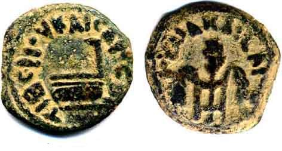

Pontius Pilate Bronze Coins

- Find Name
- Pontius Pilate Bronze Coins
- Description
- Bronze prutahs struck at the Jerusalem mint for Pontius Pilate, prefect of Judaea AD 26-36 under the emperor Tiberius. Two types were issued: year 16 (AD 29) with three bound ears of barley and the inscription 'Julia Caesar' on the obverse and a simpulum (libation ladle) with 'Tiberius Caesar' on the reverse; and years 17-18 (AD 30-31) with a lituus (augur's wand) on the obverse and the date in a wreath on the reverse, including dies with the blundered 'HZ' for 'LIZ'. Pilate's own name does not appear on the coins; they are attributed to his prefecture by mint, dates, and types.
- Historical Period
- Roman Period
- Evidence Class
- Direct
- Interpretations
- Securely attests Pilate's prefecture and its dates alongside the Pilate Stone inscription. The exclusively Roman cultic symbols (simpulum, lituus) on coinage circulating in a largely Jewish and Samaritan province show Pilate promoting Roman religion, consistent with the Gospel portrait of a governor insensitive to Jewish feeling. Nuance to state plainly: Pilate's name is absent from the coins — the attribution rests on the prefecture's minting, not a personal inscription.
- Alternative Names
- Pilate Prutahs
- Related Places
- Related Books
- Scripture Illuminated
- Biblical Significance
- Luke 3:1 dates John the Baptist's ministry to the governorship of Pontius Pilate in Judaea; these coins are the everyday currency of that governorship, struck in the very years of Jesus' ministry.
- Artifact Date
- AD 29-31
- Current Location
- Examples in the British Museum and the Israel Museum
- Discovery Location
- Jerusalem and Judaea
- Timeline Era
- Life of Christ
Awaiting Review Not yet checked against scholarly sources. Treat its claims as provisional until this entry is reviewed. About verification
Sources: https://biblearchaeologyreport.com/2019/10/11/pontius-pilate-an-archaeological-biography/
https://www.austincoins.com/pontius-pilate-bronze-prutah-26-36-ad-fine-quality/
https://www.austincoins.com/pontius-pilate-bronze-prutah-26-36-ad-fine-quality/
Last reviewed: not yet reviewed